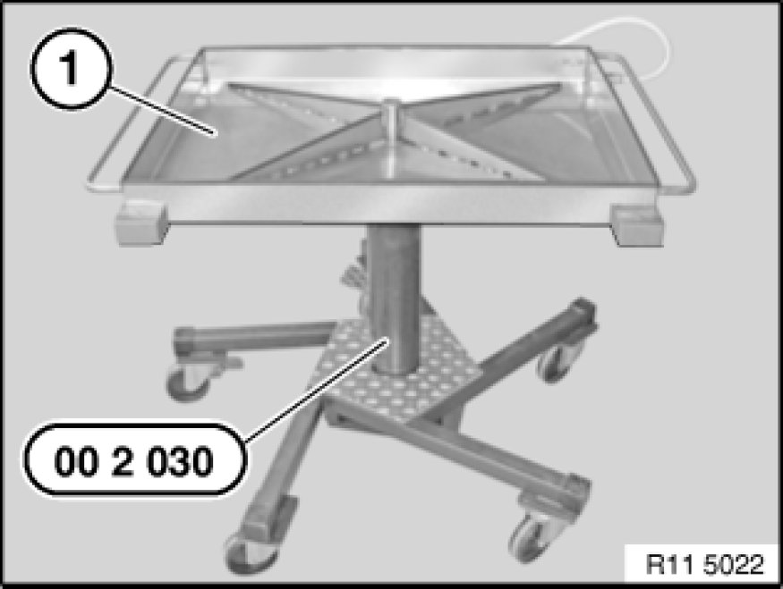
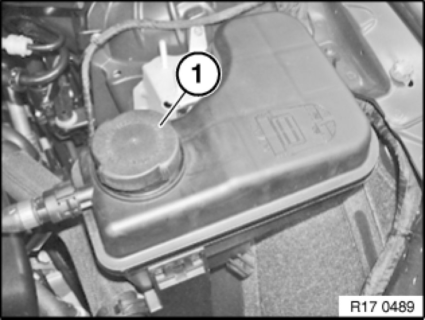
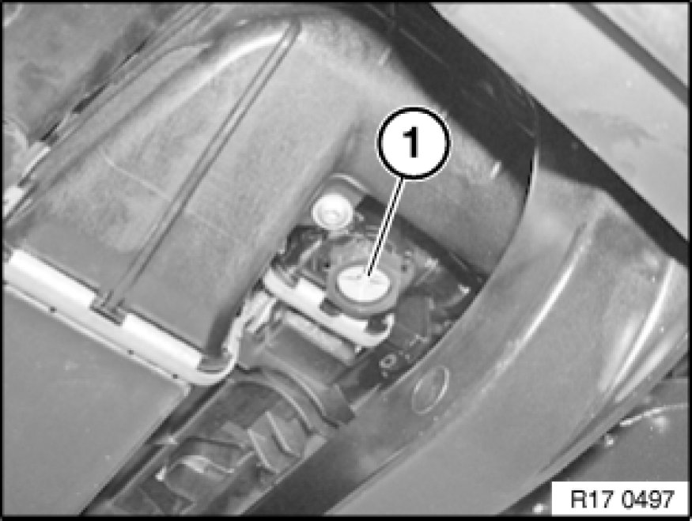
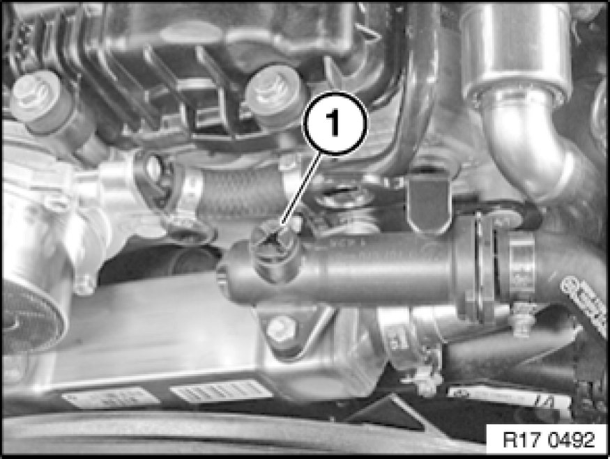

Coolant: Service and Repair
17 00 005 - Draining and adding coolant (N52K)

Special tools required:
- 00 2 030 00 2 030 Universal Hydro-Lifter Basic Unit

Necessary preliminary tasks:
- Remove underbody protection Removing and Installing/Replacing Front Underbody Protection

Warning!
Danger of scalding!
Only carry out work on cooling system after engine has cooled down.

Protective measures/rules of conduct:
- Wear protective goggles
- Wear protective gloves
- Observe national/country-specific regulations

Important!
Risk of slipping due to coolant on the floor.
Danger of injury!
Catch and dispose of drained coolant in drip tray (1) and if necessary special tool 00 2 030 00 2 030 Universal Hydro-Lifter Basic Unit (universal hydraulic lifter).
Recycling:
Observe country-specific waste-disposal regulations.

Open cap (1) on coolant expansion tank.

E83:
If fitted, release drain plug (1) on coolant radiator.
On coolant radiators which do not have a drain plug, remove coolant hose.

Open vent screw (1).

Use only recommended coolant, refer to BMW Service Operating Fluids MG17.
Note:
Adhere to the following work sequence when adding coolant.
- Switch ignition on
- Seat heating to maximum temperature and fan to low speed (heating valves are opened and auxiliary coolant pump starts up).
- Slowly fill expansion tank with coolant.
- Close vent screw after bubble-free coolant emerges or after filling up to max. cold fill level.
Vent cooling system 17 00 039 Venting Cooling System and Checking For Leaks.